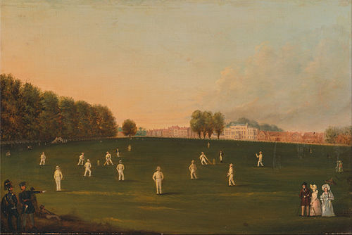

*The sport of cricket has a known history beginning in the late 16th century. Having originated in south-east England, it became an established sport in the country in the 18th century and developed globally in the 19th and 20th centuries. International matches have been played since the 19th-century and formal Test cricket matches are considered to date from 1877. Cricket is the world's second most popular spectator sport after association football (soccer). 